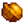

Comerciante isleño
| Comerciante isleño | |
 | |
 | |
| Horario de apertura: | Siempre |
| Dirección: | Isla Jengibre |
| Residentes: | |
El Comerciante isleño es un pájaro azul comerciante situado en la parte norte de la Isla Jengibre. Al igual que el Comerciante del desierto, el Comerciante isleño no acepta oro, solo trueques a cambio de otros objetos.
El Comerciante isleño se desbloquea por  10 Nueces de oro después de comprar la Casa de campo de la isla.
Inventario permanente
| Imagen | Nombre | Descripción | Precio |
|---|---|---|---|
| Tótem de viaje: Granja | Teletranspórtate directamente a casa. Se consume al usarlo. | ||
| Fruto de taro | Plántalos en un clima cálido. Tarda 10 días en madurar. Crece más rápido si se plantan junto al agua. Se cosechan con la guadaña. | ||
| Semillas de piña | Plántalos en un clima cálido. Tarda 14 días en madurar, y sigue produciendo fruta tras ello. | ||
| Coco dorado | Es una nuez dura de pelar.
(Disponible después de romper un coco dorado) |
||
 |
Televisión tropical | Puede colocarse dentro de casa. | |
| Antorcha de la jungla | Puede colocarse dentro de casa. | ||
| Brote de platanero | Tarda 28 días en crecer y madurar. Produce fruto todo el año si es plantado en Isla Jengibre. | ||
| Brote de mango | Tarda 28 días en producir un árbol de mango. Tiene fruta todo el año si es plantado en la Isla Jengibre. | ||
 |
Cama doble salvaje | Puede colocarse dentro de casa. | |
 |
Cama tropical | Puede colocarse dentro de casa. | |
| Semilla de caoba | Planta esto en tu granja para que crezca un árbol de caoba. | ||
| Falda Luau | ¡Una falda destinada a convertirte a tí en la fiesta «luau»! | ||
| Receta de Pudding de plátano | Receta para cocinar «Banana Pudding». | ||
| Receta de Suelo absorbente de lujo | Receta para cocinar «Deluxe Retaining Soil». |
Inventario rotativo
La Alma galáctica solo esta disponible para la venta después de que el jugador derrotar 50 monstruos especiales de los Desafios del Sr Qi. Después de eso, solo estará disponible el último día de la temporada.
| Imagen | Nombre | Descripción | Precio | Dia de venta |
|---|---|---|---|---|
| Silla tropical | Puede colocarse dentro de casa. | Días Pares de la estación | ||
 |
Gorra pequeña | Es un estilo de gorra más aerodinámico. | Todos los Lunes | |
| Palmera de pared | Puede colocarse dentro de casa. | Todos los Martes | ||
 |
Máscara de azulejo | Ponte esto para vestir como tu comerciante isleño favorito. | Todos los Miércoles | |
 |
Foto de un volcán | Puede colocarse dentro de casa. | Todos los Jueves | |
 |
Sombrero de vaquero de lujo | Un sombrero de vaquero con una forma más extrema. | Todos los Viernes | |
 |
Alfombra oceánica | Puede colocarse dentro de casa. | Todos los Sábados | |
 |
Cama doble tropical | Puede colocarse dentro de casa. | Todos los Domingos | |
| Alma galáctica | Forja 3 de estas en una espada galáctica para desatar su forma final.
(Disponible después de derrotar 50 monstruos peligrosos.[1]) |
Último Día de la Estación |
Referencias
- ↑ Consulte Locations.IslandNorth::getIslandMerchantTradeStock en el código del juego.
Historial
- 1.5: Introducido.